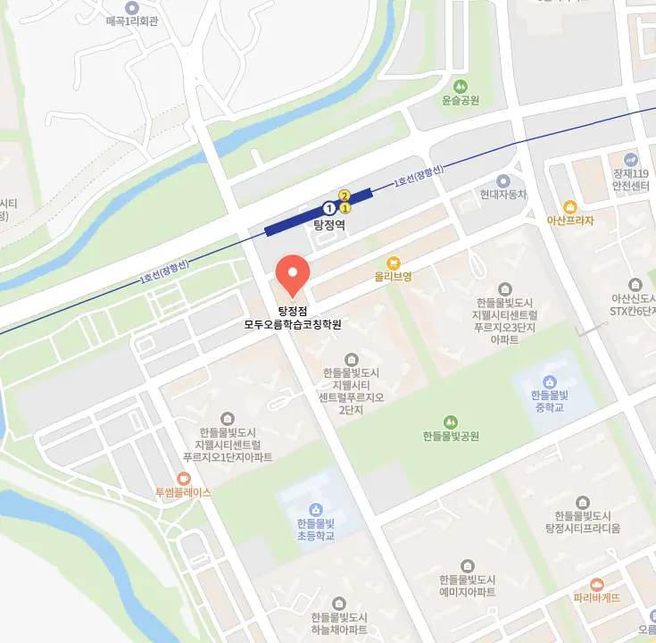

주변에 많은 탕정면 수학학원이 모여 있는 지역에서는 탕정면 수학학원 선택 기준을 명확히 잡는 것이 중요해요. 첫 번째로 강사의 교육 경력과 전문성을 확인하면 수업 질을 예측할 수 있어요. 두 번째는 교육 프로그램이 학생 개별 진도에 맞춰 유연하게 조정되는지 살펴보세요. 세 번째는 탕정면 수학학원 내 학습 자료가 최신 교과 과정과 연계돼 있는지 점검해요. 우리 탕정면처럼 주거 환경이 조용하고 학군이 좋은 곳에서는 탕정면 수학학원의 위치도 중요한 요소가 돼요. 마지막으로 수강료 대비 제공되는 서비스가 실질적인 학습 효과를 보장하는지 비교해요. 이러한 체크리스트를 활용하면 부모님도 안심하고 아이에게 맞는 탕정면 수학학원을 선택할 수 있어요.
우리 동네는 주거 환경이 조용하고 가족 중심의 분위기가 형성돼 있어요. 거기에 학교와 탕정면 수학학원이 밀집해 있어 이동이 편리하다는 장점이 있지요. 특히 이 지역은 학부모들이 교육에 관심이 높아 서로 정보를 공유하는 문화가 활발해요. 이런 분위기 덕분에 아이가 학습 동기를 자연스럽게 유지할 수 있어요. 탕정면은 초중고등학생 모두에게 맞춤형 프로그램을 제공하는 탕정면 수학학원들이 다양하게 자리하고 있어요. 따라서 각 학년별 특성을 고려한 선택이 중요하다고 생각해요.
와와학습코칭센터는 맞춤형 피드백과 키워드 기반 과제를 중심으로 수업을 진행해요. 주요 대상은 기초 실력이 고르지 않은 초중고 학생이며, 커리큘럼은 기본 개념 정리 심화 응용 실전 문제 풀이 순으로 설계돼요. 수업 시간에는 교사가 제시한 키워드를 학생이 스스로 정리하고, 다음 시간에 발표하면서 사고 과정을 공유해요. 이런 방식은 학습 동기를 스스로 찾게 만들고, 성취감도 높아진다고 거든요. 또한 고급미술1 과정은 100,000원, 고급미술2 과정은 130,000원으로 책정돼 있어 선택 폭이 넓어요. 탕정면 주변에서 통학이 편리하고, 학부모 상담도 정기적으로 제공해 신뢰를 얻고 있어요
| 학원명 | 와와학습코칭센터 |
| 수강료 | 고급미술1 100,000원 | 고급미술2 130,000원 |
CURRICULUM
탕정면 수학학원에서는 1:1 진도 체크를 통해 매일 학습 목표를 명확히 설정하고, 교사는 진행 상황을 기록해 다음 수업에 반영합니다. 수업 중에는 핵심 내용을 요약하도록 유도해, 학생 스스로 정리하는 습관을 기릅니다. 또한 과제는 난이도를 단계별로 조정해, 성공 경험을 쌓으며 자신감을 높이는 구조로 운영돼요. 피드백 시간에는 질문을 적극적으로 받아, 이해도가 낮은 부분을 집중 보강합니다. 이런 체계적인 관리가 학습 효율을 극대화하고, 장기적인 성취를 돕습니다. 학습 계획은 월 초에 전체 목표를 설정하고, 주 단위로 세부 일정과 과제를 배분해 체계적으로 진행합니다. 교사는 정기적으로 학부모와 상담을 열어, 가정 학습 환경과 연계된 맞춤 전략을 제시합니다. 이러한 과정은 학생이 스스로 학습 루프를 완성하도록 지원해요.
학생들은 탕정면 수학학원 선택 단계에서 과도한 비용과 거리만을 기준으로 판단해 실제 교육 품질을 놓치는 경우가 많아요. 등록 후 단계에서는 초기 적응 기간에 충분한 상담 없이 수업을 진행해 학습 동기가 저하될 수 있어요. 학습 관리 단계에서는 목표 설정이 모호하고 피드백 주기가 불규칙해 성취감이 감소하는 경향이 나타나요
와와탕정면 수학학원은 스스로 공부하는 힘을 기르는 것을 핵심 목표로 삼아요. 생활 습관 관리까지 포함한 학습 지도는 일관된 진도 흐름을 유지하도록 설계돼 있습니다. 유연한 시스템을 통해 전과목 내신 관리가 가능하도록 지원하고, 명제의 부정을 활용한 논리적 사고 훈련도 함께 진행돼요. 이러한 전략은 지역 내 학부모들 사이에서 높은 평가를 받고 있습니다.
고등학교 1학년으로 수업 태도는 좋지만 시험 전략이 부족한 학생에게 특히 적합합니다. 스스로 실력을 확신하지 못하는 경우가 많아, 체계적인 피드백과 전략 수립이 필요한 상황이에요. 이러한 학생이 목표 점수를 달성하려면 구체적인 시험 대비 플랜과 꾸준한 실전 연습이 필수적입니다.
처음에는 학습 태도 변화가 조금씩 보였어요. 책상에 앉아 있는 시간은 늘어났는데 집중하지 못하던 아이가 미션을 수행하며 보람을 느끼기 시작한 거죠. 강사의 집중력 있는 태도에서 믿음이 갔어요. 아이가 질문할 때마다 진심으로 들어주고 같이 고민해주는 모습이 전달되었던 것 같아요. 그래서 등록 전 불안이 성취로 바뀐 경험이 감동이에요. 성적이 오른 것도 좋지만 스스로 하려는 의지가 생겨서 더 기뻤거든요. 특히 반복되는 실수에 대한 맞춤 전략을 제시해주는 게 효과적이었어요. 아이마다 약점이 다른데 그걸 정확히 짚어줘서 시간을 아낄 수 있었어요. 이제는 학습 리듬이 자리 잡아 안정감이 생겼어요.